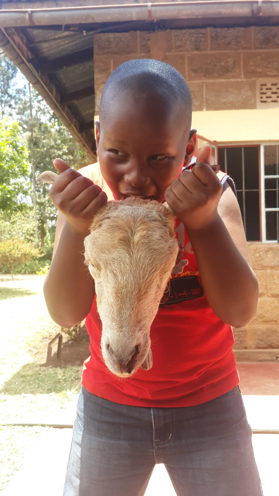

Introduction
Hello there!!!!
My name is Jesse James Kang'ethe Macibi. I am a citizen of Kenya by birth and I reside in Ruiru, Kiambu. I am currently 18 years of age now, born in the month infamous for very cold weather here in Kenya, July, on the 29th. I am the first born in a family of three children.
Before going any further I would like to thank you for taking your time to read this Personal Profile Website. This just but a short intro about me, my past,present, hopes for the future,bits of my philosophies,likes and dislikes and other things that will showcase my personality.
So without taking any more time let us begin.
My Past
Everyone's past is quite A LOOOOTTTT to cover even with in a website.I mean if I could tell you all about my past I would write a book and even if I sat for years writing it, I couldn't exahust everything I have experienced in my life. It's just too many stories combined..... So for now allow me to give a short summary entailing what that I feel were very important events in my past.
The biggest part of my background as an eighteen year old boy is mostly my educational life.My primary and high school experiences take the biggest percentage of my past.
To this day, I have been in conflict to whether educational smarts is what has been for me. Because in both of the biggest exams that I took I was quite far from reaching my set goal. Not only that but also failing to reach my set minimum by one point/grade. I was always in question of my intelligence because I showed many inconsistencies. At one time I said or did something brilliant and others... Let's just say they were moments to reflect upon .
While in school I did other things such as sing in the choir or dance infront of people. Just engaging in thing that would break the monotony of a boring school life and also to relieve the pressure laid by academics.
Likes and Dislikes

Since I was young I have had a passion for games, computers,dancing and music. As I grew up I grew a passion for basketball as a sport. I do my best to grow my skills in these likes of mine. I have a great amount of love for delicious food as you can see from the background image in the past section of my Profile.I also like keeping up with a good series or movie.
However, I have a dislike for many things. Right from lack of sleep to a code not being able to run because of a period missed somewhere in large code. Dislikes for me is another broad topic of discussion.Covering it at the moment will take sometime. So to digress to something that can be better explained.
My Current Affairs

So like my past, at the moment the biggest thing going on is school here in Moringa School, which is a school offering bootcamp courses for Tech such as the one I am currently doing(Software Engineering) Feel free to have a look at my GitHub. Infact, this website is my first project in the school.Hopefully I do well in it. So yeah not really much. No partying, no special someone, just a guy wanting to change his life for the better.
The only other thing I could be up to is having a full time job as an older brother to my lovely sisters. Otherwise I am just building skills and trying to grow as a person.
My Hope and Dreams
So as you have read there really is not much with my life. I am genuinely just a chill guy. I aspire to be a highly skilled Game Developer and Software Engineer. I also would like to have a family of my own and many other things I dream to have and be
Conclusion
So..... YEAHHH. That's a brief summary of my life. Hopefully things in the future will get more interesting for those dozing off while reading my profile. If you would like to know more about what I am up to on my instagram handle. If you would like to talk to me about something that intruiges you in my profile, You can give me a call through the number written here. Once again I appreciate you for taking your time to read this profile of mine despite it not being the best I will make another one which will be much better and even more detailed.